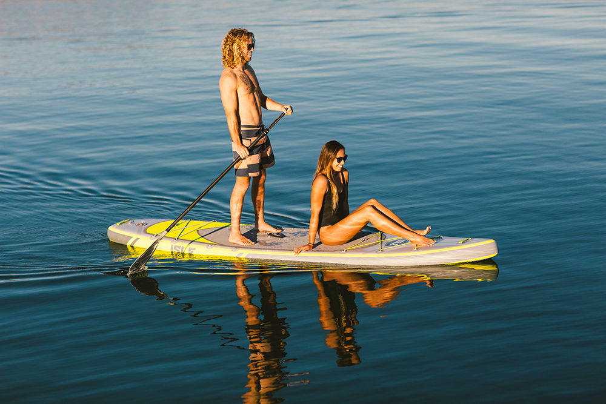
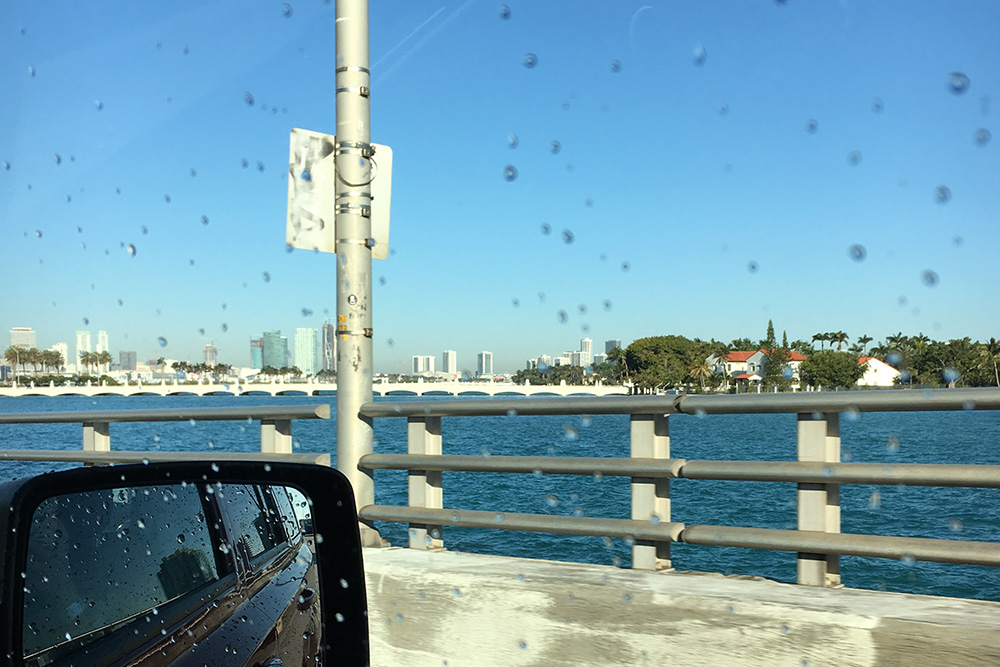
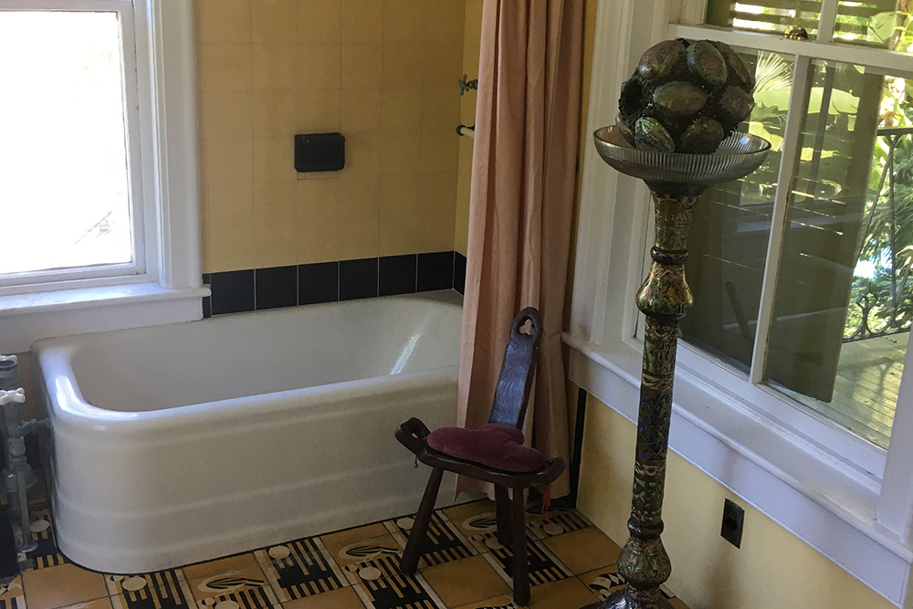

Miami Beach is a south Florida island city, it connectes bridges to mainland Miami. The most popular spot in the Miami beach is the south beach.White sand, blue seawater, bikini girls....I suggested spending all long along to just lying down on the beach, enjoying the sunshine. Life is so chill there. Espeacially I escaped from New York's stormy weather. There are many things you can try in the Miami beach......
Key West is a scenic spots which I highly recommend, it's Florida's southernmost point, lying roughly 90 miles north of Cuba. Famed for its pastel-hued, conch-style houses, it’s a cruise-ship stop also accessible from the mainland via the Overseas Highway. It’s known more for its coral reefs – destinations for diving and snorkeling – than for its beaches.Key West is a cute island which contains interesting activities and .......
Hemingway former residence is one of the biggest spots in the key west. The residence is really beautiful and luxury. It contains stories and six-toes cat! There is a great tour guide in the residence, he introduced many interesting anecdoted stories about Hemingway like he has 5 marriages, he also wrote his book in a specific loft room, he travelled to Cuba for many times, his son raised the first generation of the six-toes cat .....

Paddleing Boat is an interesting activity I have tried in Miami. This is the first time I played paddleing boat. At first, it felts unbalanced when you tried to stand up in the boat.Don't be to hash to stand up, get used to sitting in the boat first. And remeber to slide with each side.

Road trip is highly recommend in Key west. When you guys drive a car, you can also appreciate the beatufiul scenery along the sea.Play some music, chat with friends, so chill it is.

The decoration style in the residence is really amazing. A little bit vintage and tropical style.Very fashionable style.The best part I love in the house is the BATHROOM!!! Yeah, I know.